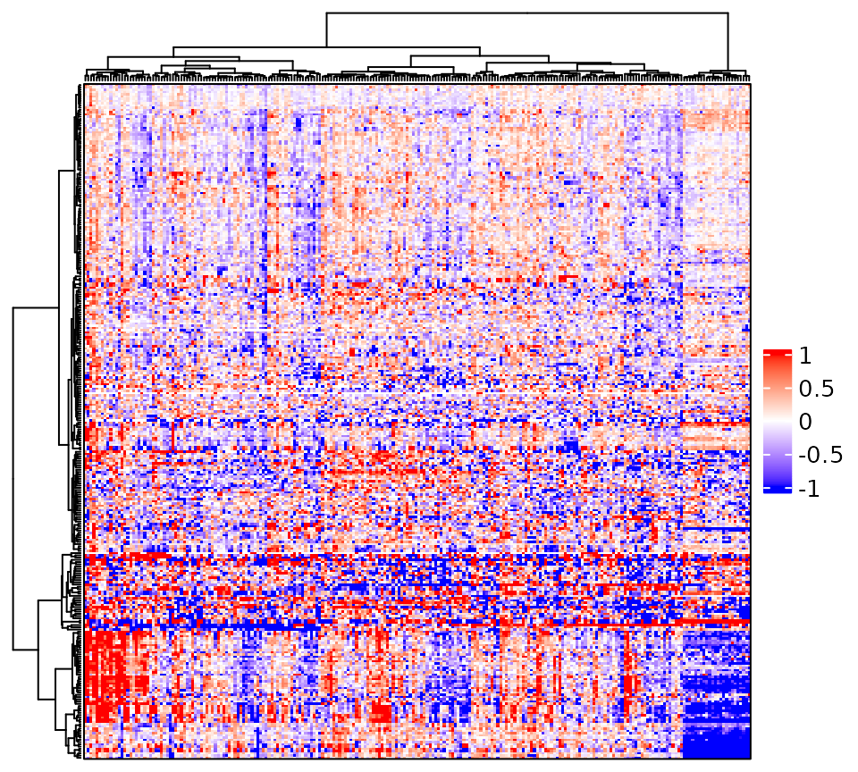
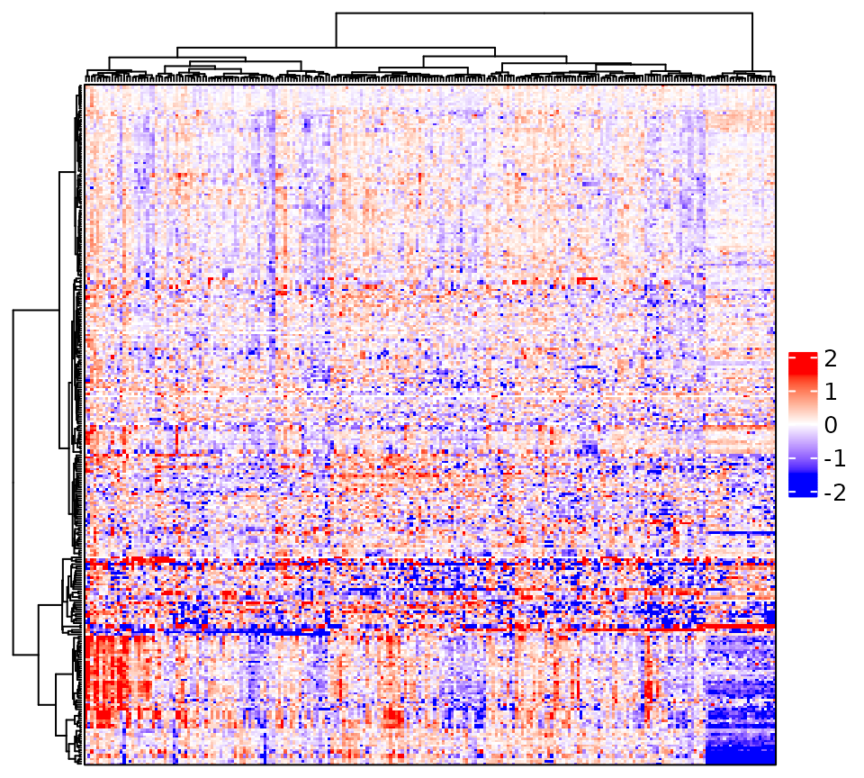
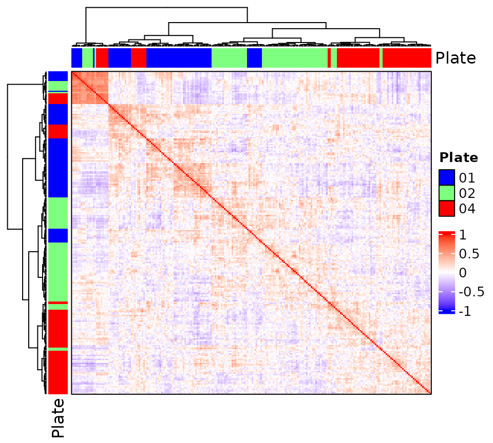
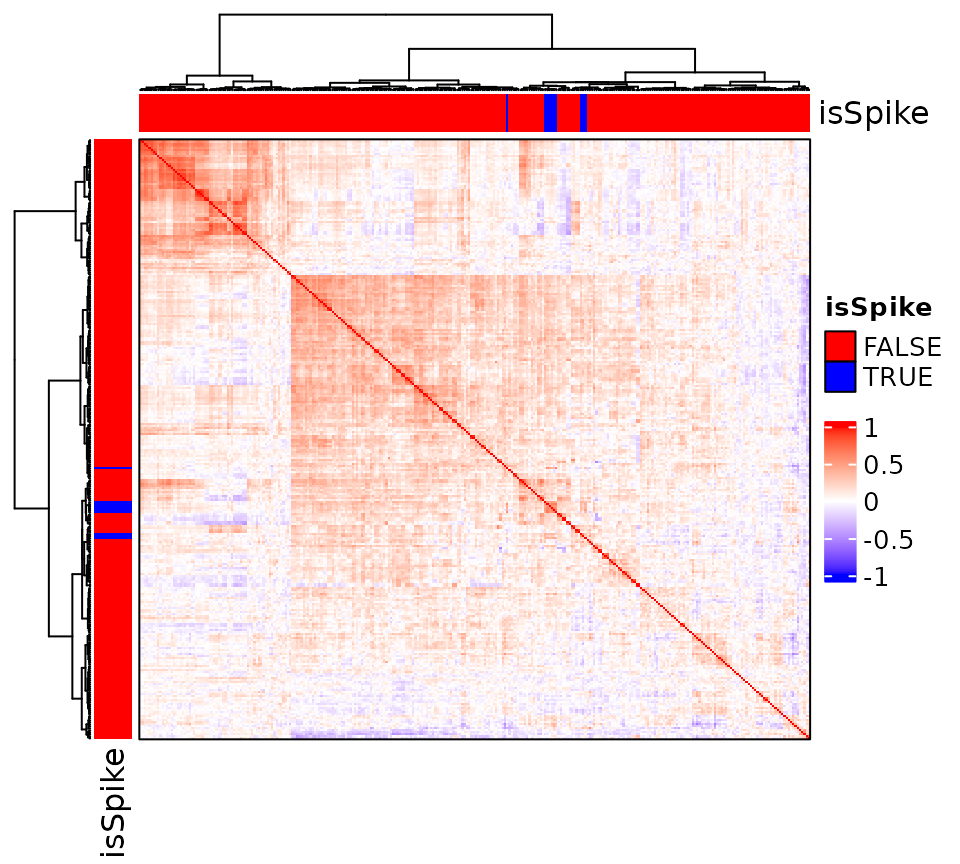
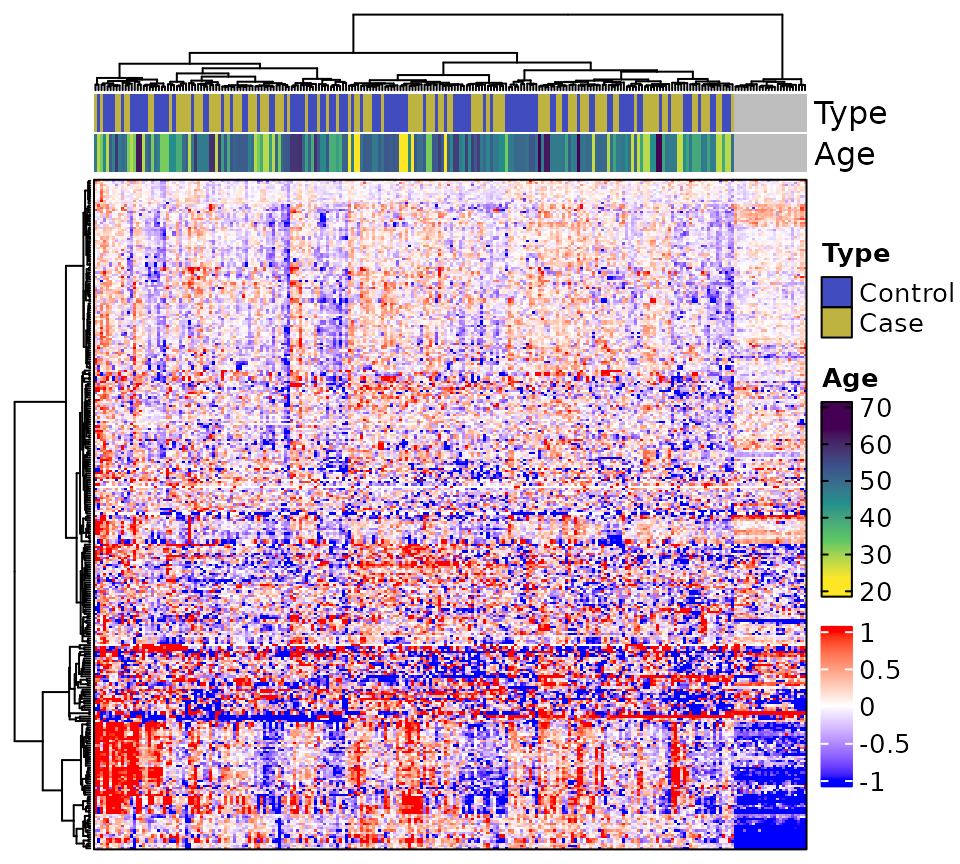
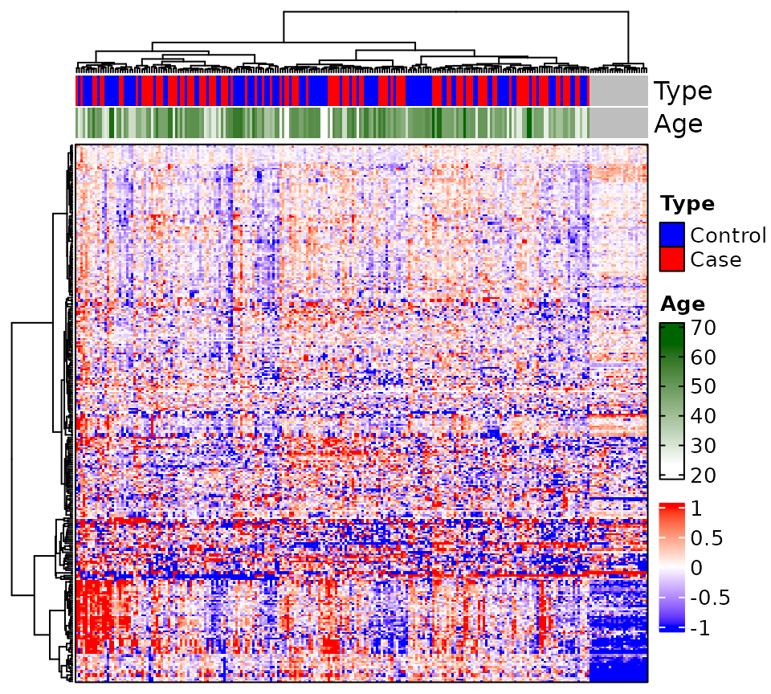

Create Annotated Expression and Correlation Heatmaps
complex_heatmap.Rmd
library(MSnSet.utils) # complex_heatmap
library(circlize) # colorRamp2
# Data
data("longitudinal_biomarker_study")
# Shorten name
ee <- longitudinal_biomarker_studyExpression Heatmaps
A heatmap of the exprs slot of an eSet or
MSnSet object with features as rows and samples as columns.
The rows can be annotated with columns in fData and the
columns can be annotated with columns in pData.
Prior to heatmap creation, the MSnSet should be put through a
missingness filter. This is because if there is a high degree of
missingness, clustering may fail. The alternative is to set
cluster_rows (and possible cluster_columns) to
FALSE. This is rarely necessary if creating correlation
heatmaps, as the correlation matrix will have few, if any, missing
values.
# Only keep features identified in at least 50% of samples
ee <- ee[rowMeans(!is.na(exprs(ee))) >= 0.5, ]Now, we can make the heatmap. For matrices with thousands of rows,
this may take a while. By default, neither sample nor feature names are
displayed, but this can be changed with the
show_column_names and show_row_names
arguments, respectively.
complex_heatmap(ee)
Due to the wide range of values, it is difficult to see color differences. We can fix this by setting limits on the range of the color scale. This does not affect the actual data: just the colors of the heatmap body. We will limit colors to (-1.5, 1.5). Values below -1.5 will be the same shade of blue, and values above 1.5 will be the same shade of red.
complex_heatmap(ee, color_range = c(-1.5, 0, 1.5))
Sample Correlation Heatmaps
Sample correlation heatmaps are generated by setting
heatmap_type to (an abbreviation of)
"sample_correlation" such as "s". This will
calculate the matrix of correlations between samples using the method
specified by cor_method and use this to generate a heatmap
with samples as both rows and columns. For sample correlation heatmaps,
only anno_column may be specified, and both rows and
columns are annotated the same way.
Sample correlation heatmaps are generally more useful when we have
sample labels, so it is usually a good idea to set
show_rownames and show_colnames to
TRUE. If there are too many samples to see labels in the
plot window, consider saving the heatmap to a file with appropriate
values for filename, height and
width to view the labels more easily.
We will create a sample correlation heatmap and annotate rows and
columns with the "Plate" column of
pData(ee).
complex_heatmap(ee, heatmap_type = "sample", anno_column = "Plate")
Feature Correlation Heatmaps
Similar to the sample correlation heatmaps, but displays the
correlations between features (proteins, peptides, etc.). Only
anno_row may be specified, and both rows and columns are
annotated the same way.
We will create a feature correlation heatmap and annotate rows and
columns with the "isSpike" column of
fData(ee).
complex_heatmap(ee, heatmap_type = "feature", anno_row = "isSpike")
Row and Column Annotation
To annotate columns and rows of the heatmap, we use the
anno_column and anno_row arguments,
respectively. anno_column takes a vector of one or more
strings that correspond to the names of columns in pData,
and anno_row takes a vector of one or more strings that
correspond to the names of column in fData. By default,
MSnSet.utils::jet2.colors is used for character, factor,
and logical values, and circlize::colorRamp2 with a viridis
color palette is used for numeric values.
We will annotate the rows using values in the "isSpike"
(logical) column of fData(ee) and annotate rows using the
values in the "Type" (factor) and "Age"
(numeric) columns of pData(ee).
# Expression heatmap with annotated rows and columns
complex_heatmap(ee, anno_row = "isSpike", anno_column = c("Type", "Age"))
Modifying Annotation Colors
We can change the colors of row and column annotations by passing
lists to anno_row_colors and
anno_column_colors respectively. For example, we will
change the colors of "Type" so that “Control” is a
different shade of blue (“#414DBE”) and “Case” is a dark yellow
(#BEB241). We only need to supply a list with new colors for
"Type".
Tip: Use the RColorBrewer package, an interactive color wheel (like this one from canva), or a color palette generator (like this one that is also from canva) to easily find the right colors.
# Modify colors for categorical variables
complex_heatmap(ee, anno_column = c("Type", "Age"),
anno_column_colors = list(Type = c("#414DBE", "#BEB241")))
Notice that the colors for "Age" are not changed. For
continuous colors, we need to use circlize::colorRamp2. See
documentation page for how to use this function. Any number of breaks
can be provided, as long as the number of colors is the same. For this
example, we will use a sequential color scale that goes from white to
green for "Age".
# Modify colors for continuous variables
complex_heatmap(ee, anno_column = c("Type", "Age"),
anno_column_colors = list(
Age = colorRamp2(breaks = range(ee[["Age"]], na.rm = TRUE),
colors = c("white", "darkgreen"))
)
)